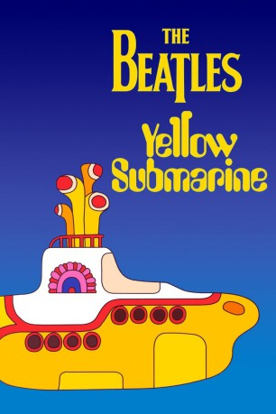
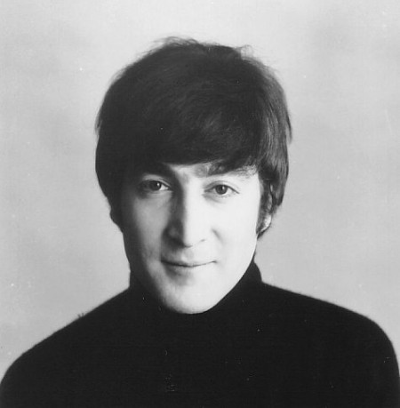
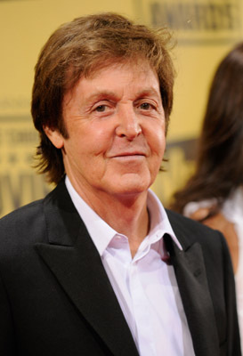

#7953 Yellow Submarine
 
 IMDB-Wertung: 7.4 / 10
IMDB-Wertung: 7.4 / 10  Tomatometer: 97
Tomatometer: 97  Metascore: 0
Metascore: 0 
Dieser mit einer Verbeugung vor den Beatles restaurierte Zeichentrickfilm bietet dem Zuschauer die seltene Gelegenheit, einen Film zu sehen, der durch sein neues technisches Erscheinungsbild wesentlich verbessert und nicht nur um zusätzlich eingefügte Szenen ergänzt wurde. In der Erkenntnis, dass der mit Songs durchsetzte Soundtrack allein Yellow Submarine zu einem Videoseller machen würde, wurde der Film Bild für Bild großzügig aufpoliert und der originale Mono-Soundtrack durch einen peinlich genauen Stereo-Mix ersetzt, der die legendären Plattenversionen sogar verfeinert. Entstanden ist ein lebendiges Stück Zeitgeschichte der 60er Jahre und ein kleiner Meilenstein in der Geschichte des Zeichentrickfilms.
Jahr: 1968
Dauer: 89 Minuten
FSK: 6
Land: England Studio: United ArtistsTonspuren: DD5.1 - ,
Untertitel:
Auflösung: 1080p (1808x1080) Größe: 5888 MB
Genre: Komödie, Abenteuer, Fantasy, Animation/Trick, Familie, Musical
Regisseur: George Dunning
Drehbuch: Lee Minoff
Soundtrack:
Darsteller:
- The Beatles als (singing voice)
- Geoffrey Hughes als Paul
- George Harrison als George (uncredited)
-  John Lennon als John (uncredited)
-  Paul McCartney als Paul (uncredited)
 Ringo Starr als Ringo (uncredited)
Ringo Starr als Ringo (uncredited)- Paul Angelis als Ringo / Chief Blue Meanie / George / Narrator
- John Clive als John
- Dick Emery als Jeremy Hilary Boob, Ph.D. - Nowhere Man / Lord Mayor / Max
- Lance Percival als Old Fred
- Peter Batten als George (uncredited)
Datei: X:\Musik\Yellow Submarine (1968, FSK6, 1808x1080).mkv seit 07.01.2018
Festplatte: HD Serien(SU-Z)+Dokus+Musik
 Es gibt insgesamt 134 Filme in der Gruppe 'Musik'
Es gibt insgesamt 134 Filme in der Gruppe 'Musik'